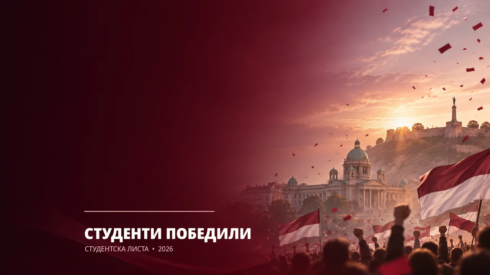
Bordo tamni režim
- Tamni režim sistema i aplikacija
- Bordo Start meni, traka zadataka i naslovne trake
- Četiri pozadine koje se smenjuju na 30 minuta
Kompletna bordo tema za vaš računar: osam pozadina u 4K, 31 ručno doterana ikonica, zaključani ekran i zvuk obaveštenja. Instalacija jednim klikom, a vraćanje bez traga.
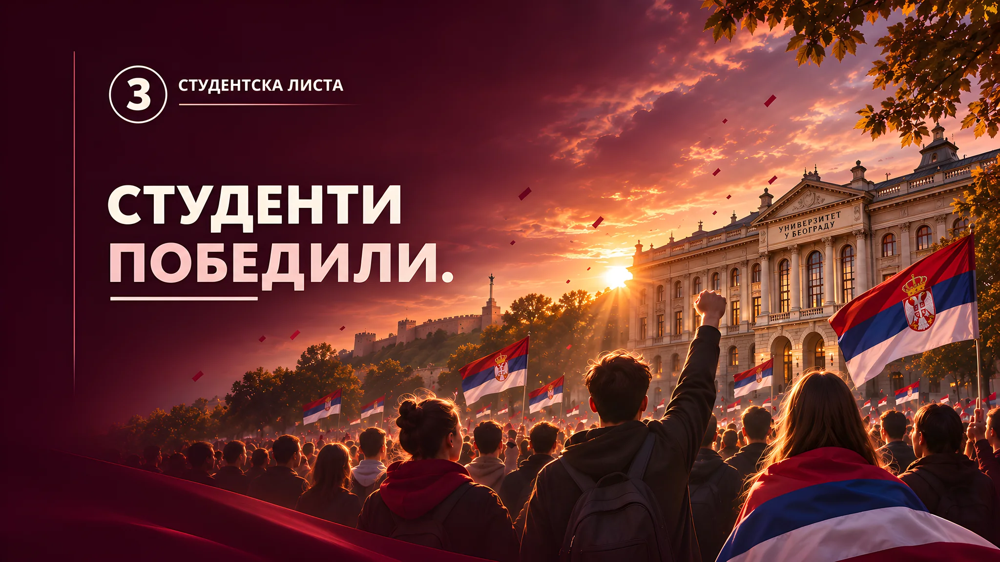
Akcentna boja je podešena tako da Windows od nje izvede čitljive nijanse u oba režima. Dugmad, linkovi i naslovne trake ostaju jasni.

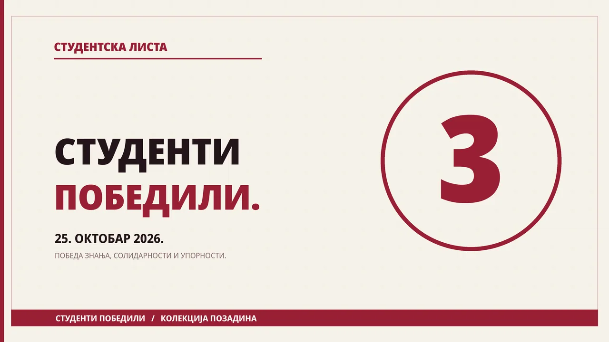
Osam pozadina 3840×2160, slideshow koji ne stavlja tekst ispod vaših ikonica.
Fascikle, Ovaj računar, korpa, diskovi, File Explorer na traci zadataka i leva navigacija, oštre na svakom skaliranju.
Postavlja se automatski. Format 16:9 za monitor, plus dve uspravne verzije za telefon.
Kratak zvuk za Windows obaveštenja. Uključuje se i isključuje jednom opcijom.
Samo trenutni korisnik, bez programa i interneta. Original se čuva pre svake izmene.
Deinstalacija vraća vašu prethodnu temu, boje, ikonice i zvuk, pa briše fajlove paketa.
Kliknite na pozadinu za veći prikaz i preuzimanje originala.
Velike ikonice su bogate 3D fascikle sa brojem 3. U levoj navigaciji svaka stavka dobija sopstvenu siluetu, pa se razlikuju i na 16 piksela.
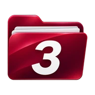
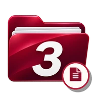
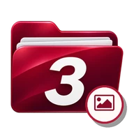
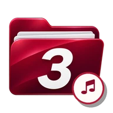
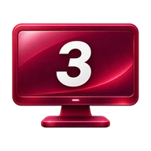
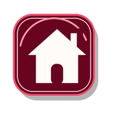
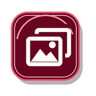
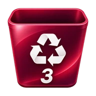
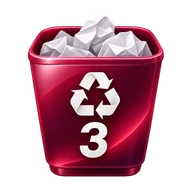
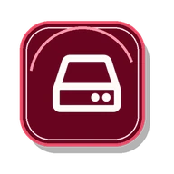
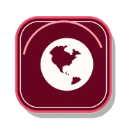
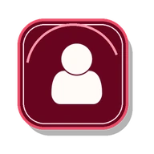
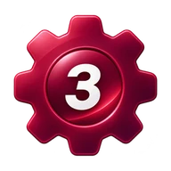
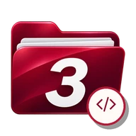
Preuzmite ZIP, pa desni klik › Extract All. Ne pokrećite ništa direktno iz ZIP-a.
Ako Windows prikaže upozorenje: More info › Run anyway. Skripte su otvorenog koda na GitHub-u.
Kompletna Bordo instalacija: tema, ikonice i zaključani ekran. Settings će se sam otvoriti i zatvoriti.
========================================================= STUDENTI POBEDILI | tema za Windows 10 / 11 ========================================================= [1] KOMPLETNO - Bordo (tamna tema, sve ikonice, zakljucani ekran) [2] KOMPLETNO - Svetla (svetla tema, sve ikonice, zakljucani ekran) [3] Samo tema Bordo (tamna) [4] Samo tema Svetla [5] Ikonice [6] Crvena "3" za SVE fascikle * [7] Zakljucani ekran [8] Zvuk obavestenja "Pobeda" [9] Vrati originalne Windows ikonice [D] Deinstaliraj sve i vrati prethodnu temu
Ista bordo tema stiže i na druge sisteme. Pozadine i ikonice se prilagođavaju svakom sistemu, onoliko koliko on dozvoljava.
GNOME i KDE Plasma: pozadine, bordo šema boja, kompletan set ikonica i ekran za prijavu.
Pozadine i zaključani ekran za telefon. Material You sam preuzima bordo boju iz pozadine.
Pozadine i zaključani ekran u punoj rezoluciji, napravljeni za uspravni ekran.
Pozadine, ikonice fascikli i tamni ili svetli režim, u okviru onoga što macOS dozvoljava.
Da. Skripte ne instaliraju programe, ne koriste internet i menjaju samo podešavanja trenutnog korisnika. Pre svake izmene čuvaju original, a ceo kod je javan na GitHub-u, pa možete da proverite svaki red.
Nisu. Jedini izuzetak je opciona crvena „3“ za sve obične fascikle: Windows tu ikonicu čuva sistemski, pa traži potvrdu (UAC). Ako je odbijete, sve ostalo radi normalno.
Pokrenite INSTALIRAJ.cmd i izaberite D. Vraća se tema koja je bila aktivna pre instalacije, kao i boje, ikonice i zvuk, a fajlovi paketa se brišu. Jedino zaključani ekran menjate sami, jer Windows ne pamti prethodnu sliku.
Pravi Windows paket teme: dvoklik instalira pozadine, akcentnu boju i tamni ili svetli režim, bez skripti. Ikonice, zaključani ekran i zvuk postavlja samo INSTALIRAJ.cmd. Pre dvoklika zatvorite Settings.
Tema, pozadine, ikonice, zaključani ekran i zvuk rade na Windows 10 i 11. Home i Gallery u levoj navigaciji postoje samo na Windows 11.
Besplatno, otvorenog koda i bez instalacije programa.